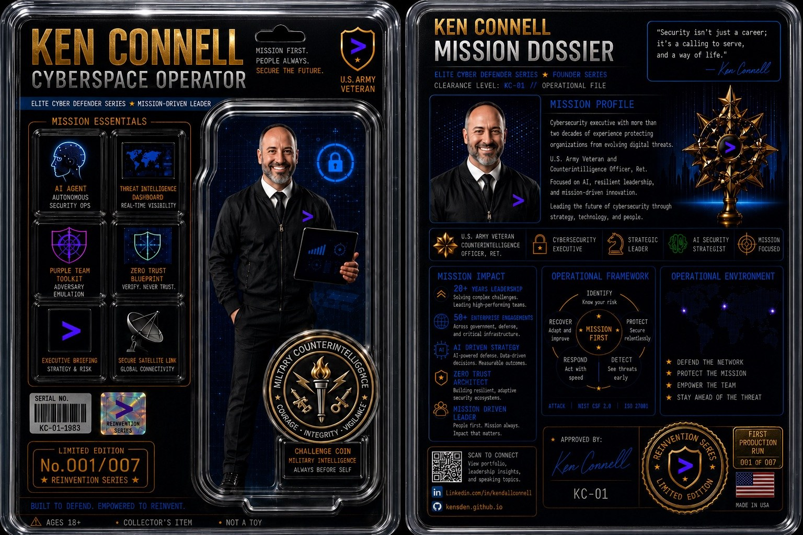
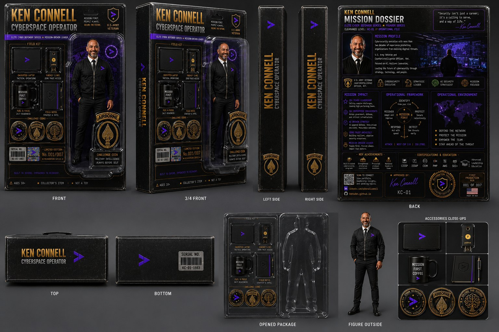
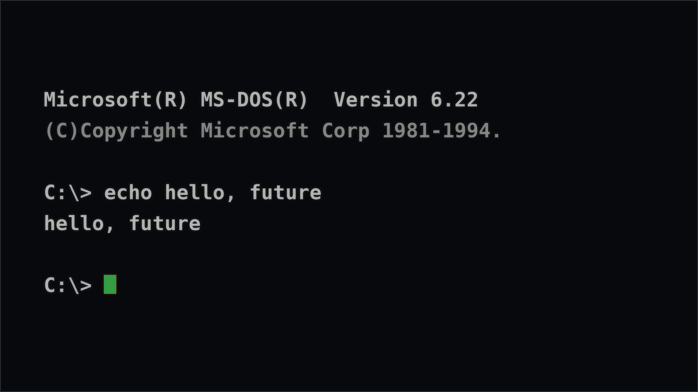
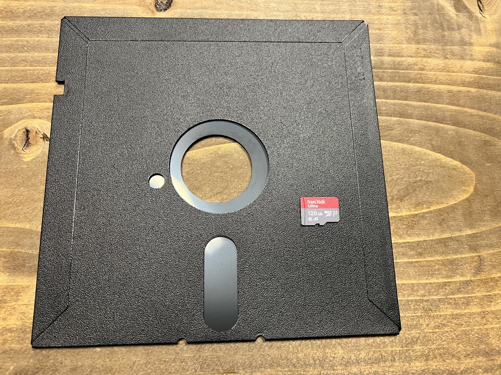
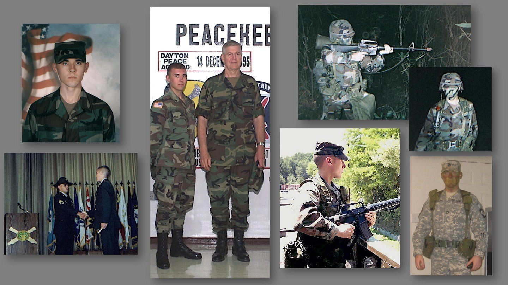
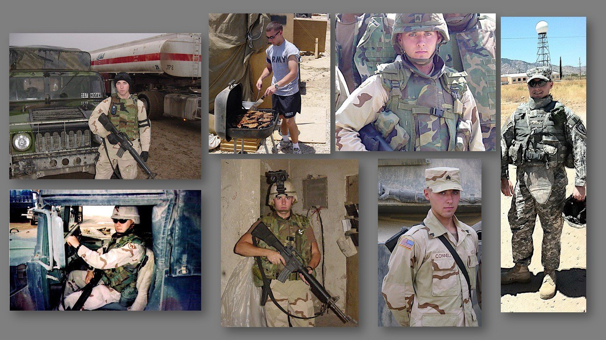
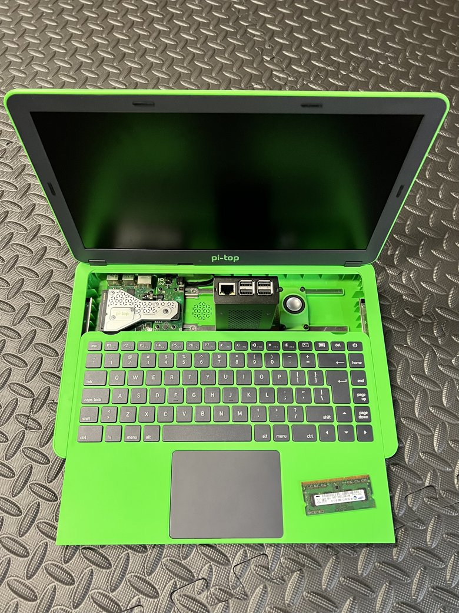
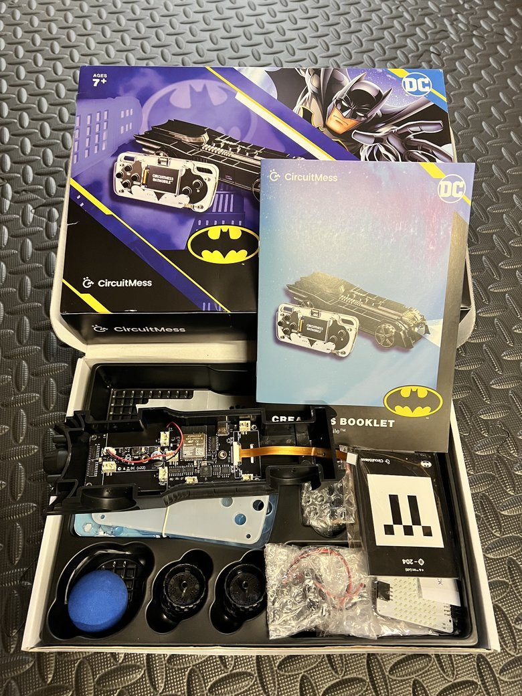

neofetch
System info
┌─┐ ┌─┐ │ └──────┘ │ ┌─┘ ┌┐ ┌┐ └─┐ │ └┘ └┘ │ │ │ └─┐ ┌────┐ ┌─┘ │ └┐ ┌┘ │ └───┘ └───┘
_ | | __ ___ _ __ | |/ / / _ \ | '_ \ | ' < | __/ | | | | |_|\_\ \___| |_| |_|
ken@hello-future
———————————————————
- OS
- MakerOS (rolling release)
- Host
- hello-future
- Kernel
- maker/dad
- Uptime
- 20+ years of public service
- Shell
- /usr/bin/cybersecurity
- Packages
- circuits, comics, code
- CPU
- curiosity (overclocked)
- Memory
- lifelong learner
- Theme
- Tech-for-Good [dark]
- Terminal
- hello future_
cat ~/.ethos
Work ethic
Go deep and know your tools. Read the primary source. Earn the understanding instead of borrowing the headline. 🤓📖
Aim the knowledge at problems that matter — right now, in the real world. 🎯📈
Show up. Collaborate, ship, teach, and keep moving. 🤝🌎✈️
man ken
Collector's item
What happens when a lifelong comic collector spends two decades in security? Eventually you make yourself the action figure. Mission first. People always. Not a toy. 🦸
Now I've finally made it into the toy aisle. Sort of. One evening spent directing an AI image model, and here I am in blister packaging. Not magic. Just a tool, built on human effort.
And yes, the early versions misspelled several words. "Counterintelligence" among them. Took a human to catch the mistakes. Moral of the story… Even the machine needs a human in the lead!


whoami
The story so far
I've been tinkering with tech out of a lifelong, passionate self-interest since I built my first PC from a pile of parts acquired in 8th grade — teaching myself from an old Microsoft VHS learning series and VCR player borrowed from a local library. 📼
Before I could afford the real thing, I'd clack away on an old typewriter, pretending it was a computer; typing up the "www-dot" addresses I scribbled down from the ends of TV commercials, building a hand-written index of an internet I couldn't reach yet. The real thing came piece-by-piece, with money earned mowing yards and dodging fire ants during long, hot South Georgia summers. ⌨️
Only booting to a DOS command line before I was able to upgrade to Windows 3.1; with dial-up internet arriving not long after. Back then "the network" was sneakernet — a stack of floppies hand-carried across the room — and my printer was a clunky black-and-white dot-matrix machine chewing through perforated tractor-feed paper. All before USB drives were even a thing. 💾


I later enlisted in the U.S. Army Reserve in 2000, my junior year of high school, and shipped off the summer before my senior year to Basic Combat Training at Fort Sill, Oklahoma — Home of the Field Artillery. The next year brought Advanced Individual Training at Fort Jackson, South Carolina, where I took my final exam on the morning of September 11th, 2001 — the same date printed on my diploma, and the day I officially completed initial entry training and was qualified to serve as a soldier. 🪖

From there I came up through the enlisted ranks to Staff Sergeant, earned my commission as an officer, and more recently retired as a Major in 2024 — more than two decades of service; #TempusFugit. Along the way I deployed to Bosnia-Herzegovina for peacekeeping and across the Middle East, including Iraq, where I spent my 21st birthday. 🎖️

Out of the University of Georgia in 2009, my first job took me across the Atlantic — a security consultant at Deloitte in London, advising commercial clients throughout Europe on global trade compliance. 🌍
Since London, I've spent more than a decade in management consulting and risk advisory — leading enterprise cybersecurity work for Fortune 100 and global clients across the commercial and federal worlds, from cyber threat intelligence and cloud security to compliance across international frameworks. 🛡️
These days I work in security — countering threats and mitigating risks by harnessing advanced AI. I pair an analyst's mindset with an operator's instinct to transform and reinvent all aspects of security. Attribution, insider risk, adversarial tradecraft: the old questions, asked of new Agentic AI systems. For me, security isn't just a department — it's a mission. 👾
Off the clock, I'm a maker, a tinkerer, and a dad doing his best to pass the curiosity on — building little electronics projects with my kiddos and watching the same sparks of curiosity ignite in them. AI is becoming part of their everyday world the way the internet became part of mine, so we're learning it together — prompts and patterns one day, soldering irons the next. I'd rather raise builders than browsers; kids who create, build, and delegate, not just swipe and scroll. Trust, but verify, it turns out, is both a parenting principle and a security one. I wrote the longer version of that thought in Batman Has No Superpowers. That's the Whole Point.


ls ~/writing/
Dispatches
Occasional long-form writing. Stories first, tech second.
ls ~/now/
What I'm into right now
fortune
"Progress brings with it the amelioration of the human condition."
·> the reason any of this is worth doing 🛠💡
"Always work hard on something uncomfortably exciting."
·> Larry Page — co-founder of Google & Alphabet
cat ~/influences.log
Standing on shoulders
make future
We make the future
From pi-top — the spirit behind everything on this page: the world as classroom and laboratory, and the makers who build it. 🔨
cat /etc/creed
The maker's creed
The world is our classroom, our laboratory. We're the makers and the modders, the dreamers and the hackers — the "what if?" and the "I wonder why?" Every problem is just a chance to improve our lives, our world, our community. So we build, we break, we fix, we learn — and together, we make the future. 🔭📡🔨
history
The Electricity Metaphor
Jeff Bezos on how a transformative technology — like electricity a century ago — eventually fades into invisible infrastructure, unleashing inventions nobody saw coming. It's how I think about AI now: we're still in the early, electrifying days. ⚡
play talk.mp4
Hire the Scrapper
This one hits close to home. Regina Hartley on why the best hire might not have the perfect resume — and why passion and purpose tend to beat pedigree. Reminds me where I came from. 🪛